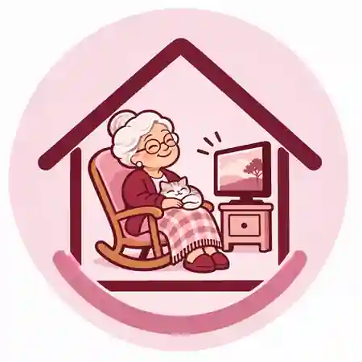

Личный уход — Grundpflege
Помощь с гигиеной, одеванием, передвижением и другими повседневными действиями.
Подробнее о GrundpflegeАмбулаторный уход на дому · Берлин
Когда близкому человеку нужна помощь, особенно важно сохранить чувство безопасности и привычный уклад жизни. Pflegedienst Malaika оказывает услуги по личному уходу и назначенному врачом медицинскому уходу на дому.
Офис в Берлине-Шпандау · Выезды в семь зон обслуживания

Внимание к человеку.
Уважение к привычной жизни.
Наше преимущество
Когда речь идёт о личном уходе, взаимопонимание особенно важно. В нашей команде говорят по-немецки, по-русски, по-английски и по-французски.
Наши услуги
Существуют разные формы ухода на дому. Мы объясняем, какую помощь оказывает Malaika и что нужно для обращения.
Помощь с гигиеной, одеванием, передвижением и другими повседневными действиями.
Подробнее о GrundpflegeНазначенные врачом медицинские и сестринские процедуры в домашней обстановке.
Подробнее о BehandlungspflegeС чего начать, если маме или папе стало трудно справляться с ежедневными делами.
Как организовать помощь родителямГде мы работаем
У наших сотрудников есть автомобили для выездов к пациентам. Мы работаем в следующих районах:
Уточнить возможность выезда: 030 450 820 69
Для семьи
Не обязательно сразу разбираться во всех немецких терминах. Важно понять, что именно стало трудно выполнять самостоятельно и какая поддержка нужна.
Как начать организовывать уход за родителямиПри выполнении установленных законом условий лечение и назначенные медицинские процедуры на дому может оплачивать Krankenkasse. Возможны предусмотренные законом доплаты. Grundpflege может частично оплачиваться Pflegekasse в зависимости от Pflegegrad и индивидуального права на выплаты; расходы сверх покрытия могут оплачивать сами пациенты.
Сотрудники выезжают в Wedding, Reinickendorf/Wittenau, Lichtenberg, Steglitz/Zehlendorf, Tempelhof, Charlottenburg и Spandau. Конкретное время и возможность начала обслуживания согласуются по вашему адресу.
Да. В команде говорят на немецком, русском, английском и французском. Пожалуйста, укажите предпочтительный язык при обращении, чтобы мы могли согласовать подходящего сотрудника.
Позвоните и расскажите, где живёт человек, какая помощь нужна и когда желательно начать. Если уже есть Pflegegrad или назначение врача, сообщите об этом во время разговора.